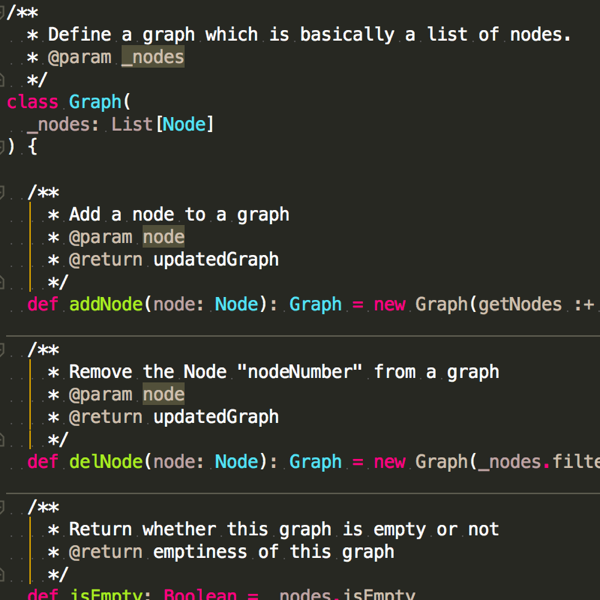

Boulder Dash
Clone of Boulder Dash,
done
in
Java, use of MVC pattern.
Wishes Server
Website coded using CodeIgniter, PHP, Javascript / AJAX.
IDs to play: USERNAME: bvozel, PASSWORD: servicesENSSAT
Entire Conception of Product
Use of UML and UP methodologies to design a fictive application.
The product is an app which will rationalize the means of transports in a city.

Warshall Algorithms
Use of Scala, SBT and Git. Tests provided in "src/test" (eh, we are not
uncivilized here, just trying to do a little DevOps...)
Travel Agency's Database
School project; subject: creation of a fictive travel agency's database. Modeling of the
database with entity/relationship models.
Use of MySQL (stored procedures, triggers, views...).
Eigenfaces with Matlab
Use of Matlab to develop face recognition with the Eigenfaces.
JMeter Tutorial
Presentation & tutorial about JMeter: the basis.
Use of reveal.js / HTML.
VaultChat
School project; subject: decentralized and distributed system. Communication
between fictive atomics shelters. Use of critical section and mutex to make the
communications
secure and parallel.
Use of Java and Java RMI.
Canny Edge Detector
Use of Scilab to do a little bit of image processing, with the Canny's algorithm.
Machine Learning Algorithms
Use of Python & Scikit lib to experiment with machine learning algorithms, such
as
Linear regression, Trees, Random Forests... Work in pairs with Anais GALISSON.
Solar System Simulation
Use of Javascript, HTML/CSS and OpenGL to develop a solar system
simulation.
Ergonomy & Website Design
Use of Sketch to design a website for an association.
In this project, the goal was more to think about choices of implementation & designs than
coding
the website itself.
Switchup Challenge Cisco
Cisco innovation challenge. Main goal: think about society/environment problems, and imagine
a
product or a service to solve this problem. In three words: change the world!
Team of 6 persons from ENSSAT engineering school.
Management at ENSSAT: ASTEP
Management project at ENSSAT. I was teaching computing science at primary school.
Group of ~25 children, from 8 to 10. We prepared our interventions during one year:
exercises,
pedagogy,...
Use of Scratch to give basis of programming.
Load Testing Fundamentals
Article concerning the Load testing fundamentals - state of the art.
Information about processes, tools and methods used in load testing.
Speed Dating Experiment
Use of R, Neo4j and Gephi to analyse a Dataset concerning some Speed
Dating
events.
Quick Setup Debian Server
Use of Ansible to script and automate the configuration of a blank Debian 8 server
with only one command.
Junior System Architect, IDA
Work for a Danish Union for Engineers during 3 months as a Junior System Architect to study
the feasability of
a migration between different Microsoft products.
Titanic & Machine Learning
Use of R to analyse a Dataset concerning the sinking of the Titanic. Machine Learning
models
used to predict the survivors of the crash.
Beers scraper Scala
Use of Scala to scrap a webpage containing data about beers.
The goal is to learn how to scrap the web to create my own datasets.
LaTeX template repository
Use of LaTeX to create templates from scratch for school reports & papers.